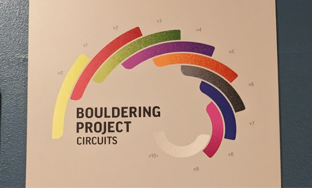

C is for Climbing
A Bouldering Project Brooklyn Dictionary
Amelia Nonemacher
Bouldering: type of rock climbing where climbers ascend a short wall without the support of a harness. More technique and strength focused than climbing with ropes, or “top-roping.”

Hold: piece of plastic, wood, or other material bolted to the wall, used to get up the wall. Mimics natural texture of an outdoor rock formation.
Route: specific path to the top, using only specific holds usually marked by color.
Project: a specific route at or above a climber’s ability level that takes multiple attempts or sessions to achieve.
Bouldering Project Brooklyn: formerly the founding location of Brooklyn Boulders, this gym was purchased by Bouldering Project in 2022 and renovated from 2022-2024 to match Bouldering Project’s standard style and expand amenities.
Grade: degree of difficulty of a route. Routes in the US are typically graded on the V scale, with V0 being the easiest. The highest V grade as of 2024 is V17 with only four climbs earning the designation, but most gyms set up to around V10.
Color circuit grading: use of colors to represent a range of difficulties of a route. This design can encourage climbers to try a wider range of difficulties and a wider range of styles. Used by Bouldering Project.

Gym community: literally, attendees of a gym; in a larger sense, the vibe and inclusivity of a particular gym crowd. Some gyms like BP may emphasize their ability to host community through amenities like co-working spaces, yoga, and climbing courses, and , or through events like family nights, local competitions, and discount promotions. Gyms often advertise themselves to new customers by emphasizing their community, though newly opened gyms may take a minute to form it.
Recreation/fun: the ultimate goal of climbing. Nothing should be taken too seriously, but care should be taken by management to ensure that participants are served well and that design or business choices better the health of the community. This includes being aware of barriers to entry and the changing landscape of the climbing industry in the US as it gets more popular and more expensive.